As defined in an earlier introductory section, isomers are different compounds that have the same molecular formula. When the group of atoms that make up the molecules of different isomers are bonded together in fundamentally different ways, we refer to such compounds as constitutional isomers. For example, in the case of the C4H8 hydrocarbons, most of the isomers are constitutional. Shorthand structures for four of these isomers are shown below with their IUPAC names.
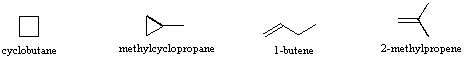
Note that the twelve atoms that make up these isomers are connected or bonded in very different ways. As is true for all constitutional isomers, each different compound has a different IUPAC name. Furthermore, the molecular formula provides information about some of the structural features that must be present in the isomers. Since the formula C4H8 has two fewer hydrogens than the four-carbon alkane butane (C4H10), all the isomers having this composition must incorporate either a ring or a double bond. A fifth possible isomer of formula C4H8 is CH3CH=CHCH3. This would be named 2-butene according to the IUPAC rules; however, a close inspection of this molecule indicates it has two possible structures. These isomers may be isolated as distinct compounds, having characteristic and different properties. They are shown here with the designations cis and trans.
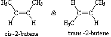
The bonding patterns of the atoms in these two isomers are essentially equivalent, the only difference being the relative orientation or configuration of the two methyl groups (and the two associated hydrogen atoms) about the double bond. In the cis isomer the methyl groups are on the same side; whereas they are on opposite sides in the trans isomer. Isomers that differ only in the spatial orientation of their component atoms are called stereoisomers. Stereoisomers always require that an additional nomenclature prefix be added to the IUPAC name in order to indicate their spatial orientation, for example, cis (Latin, meaning on this side) and trans (Latin, meaning across) in the 2-butene case.
The carbon-carbon double bond is formed between two sp2 hybridized carbons, and consists of two occupied molecular orbitals, a sigma orbital and a pi orbital. Rotation of the end groups of a double bond relative to each other destroys the p-orbital overlap that creates the pi orbital or bond. Because the pi bond has a bond energy of roughly 60 kcal/mole, this resistance to rotation stabilizes the planar configuration of this functional group. As a result, certain disubstituted alkenes may exist as a pair of configurational stereoisomers, often designated cis and trans. The essential requirement for this stereoisomerism is that each carbon of the double bond must have two different substituent groups (one may be hydrogen). This is illustrated by the following general formulas. In the first example, the left-hand double bond carbon has two identical substituents (A) so stereoisomerism about the double bond is not possible (reversing substituents on the right-hand carbon gives the same configuration). In the next two examples, each double bond carbon atom has two different substituent groups and stereoisomerism exists, regardless of whether the two substituents on one carbon are the same as those on the other.
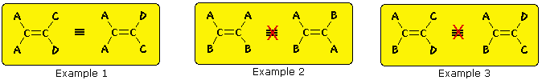
Some examples of this configurational stereoisomerism (sometimes called geometric isomerism) are shown below. Note that cycloalkenes smaller than eight carbons cannot exist in a stable trans configuration due to ring strain. A similar restriction holds against cycloalkynes smaller than ten carbons. Since alkynes are linear, there is no stereoisomerism associated with the carbon-carbon triple bond.
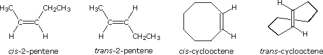
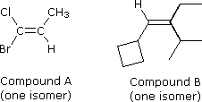
Configurational stereoisomers of the kind shown above need an additional nomenclature prefix added to the IUPAC name, in order to specify the spatial orientations of the groups attached to the double bond. Thus far, the prefixes cis- and trans- have served to distinguish stereoisomers; however, it is not always clear which isomer should be called cis and which trans. For example, consider the two compounds on the right. Both compound A (1-bromo-1-chloropropene) and compound B ( 1-cyclobutyl-2-ethyl-3-methyl-1-butene) can exist as a pair of configurational stereoisomers (one is shown). How are we to name these stereoisomers so that the configuration of each is unambiguously specified? Assignment of a cis or trans prefix to any of these isomers can only be done in an arbitrary manner, so a more rigorous method is needed. A completely unambiguous system, based on a set of group priority rules, assigns a Z (German, zusammen for together) or E (German, entgegen for opposite) to designate the stereoisomers. In the isomers illustrated above, for which cis-trans notation was adequate, Z is equivalent to cis and E is equivalent to trans.
Assign priorities to double bond substituents by looking at the atoms attached directly to the double bond carbons.
1. The higher the atomic number of the immediate substituent atom, the higher the priority. For example, H– < C– < N– < O– < Cl–. (priority increases left to right) (Different isotopes of the same element are assigned a priority according to their atomic mass.) 2. If two substituents have the same immediate substituent atom, move to the next atom (away from the double bond) until a difference is found. For example, CH3– < C2H5– < ClCH2– < BrCH2– < CH3O–.
Once the relative priorities of the two substituents on each of the double bond carbons has been determined, a cis orientation of the higher priority pair is designated Z, and a trans orientation is termed E. Applying these rules to the isomers of compounds A and B shown above, we assign the configuration of the 1-bromo-1-chloropropene isomer as E (Br has higher priority than Cl, and CH3 a higher priority than H). The configuration of the 1-cyclobutyl-2-ethyl-3-methyl-1-butene isomer is determined to be Z (C4H7 has higher priority than H, and the isopropyl group has higher priority than an ethyl group). The following example elaborates the priority determination for a more complex case.
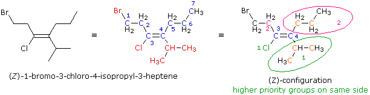
The line formula is expanded to give the structural formula in the center. The root name is heptene (the longest chain incorporating both carbons of the double bond), and the substituents (in red) are added to give the IUPAC name. In order to assign a configurational prefix the priority order of substituents at each double bond carbon must be determined. For carbon #3 the immediate substituent atoms are a chlorine and a carbon. The chlorine has a higher atomic number and therefore has higher priority (colored green and numbered 1). The more remote bromine atom does not figure in this choice. For carbon #4 the immediate substituent atoms are both carbons (colored orange). As a result, we must look at the next higher atomic number atoms in the substituent chain. These are also carbon, but the isopropyl group has two carbons (also orange) whereas the propyl group has only one. The priority order is therefore isopropyl (green) > propyl (magenta). Since the two higher priority groups (#1) are on the same side of the double bond, this configuration is (Z).
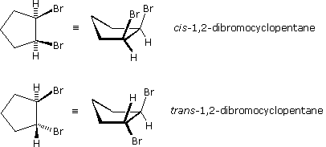
Stereoisomers are also observed in certain disubstituted (and higher substituted) cyclic compounds. Unlike the relatively flat molecules of alkenes, substituted cycloalkanes must be viewed as three-dimensional configurations in order to appreciate the spatial orientations of the substituents. By agreement, chemists use heavy, wedge-shaped bonds to indicate a substituent located above the average plane of the ring (note that cycloalkanes larger than three carbons are not planar), and a hatched line for bonds to atoms or groups located below the ring. As in the case of the 2-butene stereoisomers, disubstituted cycloalkane stereoisomers may be designated by nomenclature prefixes such as cis and trans. The stereoisomeric 1,2-dibromocyclopentanes shown to the right are an example. In general, if any two sp3 carbons in a ring have two different substituent groups (not counting other ring atoms) stereoisomerism is possible. This is similar to the substitution pattern that gives rise to stereoisomers in alkenes; indeed, one might view a double bond as a two-membered ring. Four other examples of this kind of stereoisomerism in cyclic compounds are shown below.
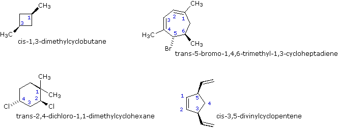
If more than two ring carbons have different substituents (not counting other ring atoms) the stereochemical notation distinguishing the various isomers becomes more complex.
For examples of how such compounds are named in the IUPAC system .
Three problems concerning the naming of alkene stereoisomers.
Structural formulas show the manner in which the atoms of a molecule are bonded together (its constitution), but do not generally describe the three-dimensional shape of a molecule, unless special bonding notations (e.g. wedge and hatched lines) are used. The importance of such three-dimensional descriptive formulas became clear in discussing configurational stereoisomerism, where the relative orientation of atoms in space is fixed by a molecule's bonding constitution (e.g. double-bonds and rings). Here too it was noted that nomenclature prefixes must be used when naming specific stereoisomers. In this section we shall extend our three-dimensional view of molecular structure to include compounds that normally assume an array of equilibrating three-dimensional spatial orientations, which together characterize the same isolable compound. We call these different spatial orientations of the atoms of a molecule that result from rotations or twisting about single bonds conformations.
In the case of hexane, we have an unbranched chain of six carbons which is often written as a linear formula: CH3CH2CH2CH2CH2CH3. We know this is not strictly true, since the carbon atoms all have a tetrahedral configuration. The actual shape of the extended chain is therefore zig-zag in nature. However, there is facile rotation about the carbon-carbon bonds, and the six-carbon chain easily coils up to assume a rather different shape. Many conformations of hexane are possible and two are illustrated below.
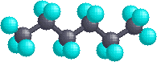
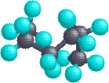
For an animation of conformational motion in hexane .
The simple alkane ethane provides a good introduction to conformational analysis. Here there is only one carbon-carbon bond, and the rotational structures (rotamers) that it may assume fall between two extremes, staggered and eclipsed. In the following description of these conformers, several structural notations are used. The first views the ethane molecule from the side, with the carbon-carbon bond being horizontal to the viewer. The hydrogens are then located in the surrounding space by wedge (in front of the plane) and hatched (behind the plane) bonds. If this structure is rotated so that carbon #1 is canted down and brought closer to the viewer, the "sawhorse" projection is presented. Finally, if the viewer looks down the carbon-carbon bond with carbon #1 in front of #2, the Newman projection is seen.
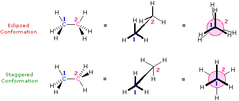
Bond Repulsions in Ethane
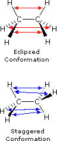
To see an eclipsed conformer of ethane orient itself as a Newman projection, and then interconvert with the staggered conformer and intermediate conformers .
As a result of bond-electron repulsions, illustrated on the right above, the eclipsed conformation is less stable than the staggered conformation by roughly 3 kcal / mol (eclipsing strain). The most severe repulsions in the eclipsed conformation are depicted by the red arrows. There are six other less strong repulsions that are not shown. In the staggered conformation there are six equal bond repulsions, four of which are shown by the blue arrows, and these are all substantially less severe than the three strongest eclipsed repulsions. Consequently, the potential energy associated with the various conformations of ethane varies with the dihedral angle of the bonds, as shown below. Although the conformers of ethane are in rapid equilibrium with each other, the 3 kcal/mol energy difference leads to a substantial preponderance of staggered conformers (> 99.9%) at any given time. Although steric and/or bond electron repulsion remain the most popular explanation for the hindered rotation of ethane, molecular orbital interactions have also been proposed as a significant factor. For a discussion of this feature .
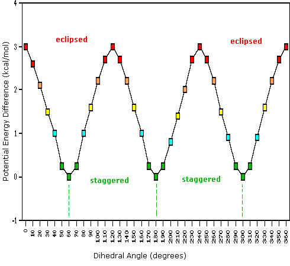
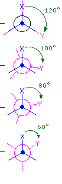
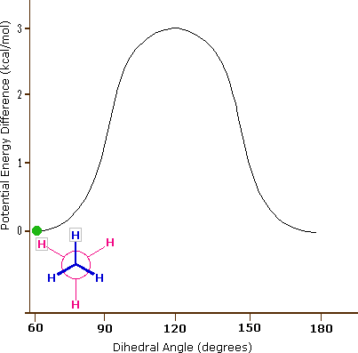
The hydrocarbon butane has a larger and more complex set of conformations associated with its constitution than does ethane. Of particular interest and importance are the conformations produced by rotation about the central carbon-carbon bond. Among these we shall focus on two staggered conformers (A & C) and two eclipsed conformers (B & D), shown below in several stereo-representations. As in the case of ethane, the staggered conformers are more stable than the eclipsed conformers by 2.8 to 4.5 kcal/mol. Since the staggered conformers represent the chief components of a butane sample they have been given the identifying prefix designations anti for A and gauche for C.
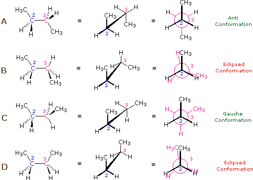
The following diagram illustrates the change in potential energy that occurs with rotation about the C2–C3 bond. The model on the right is shown in conformation D, and by clicking on any of the colored data points on the potential energy curve, it will change to the conformer corresponding to that point. The full rotation will be displayed by turning the animation on. This model may be manipulated by click-dragging the mouse for viewing from any perspective.
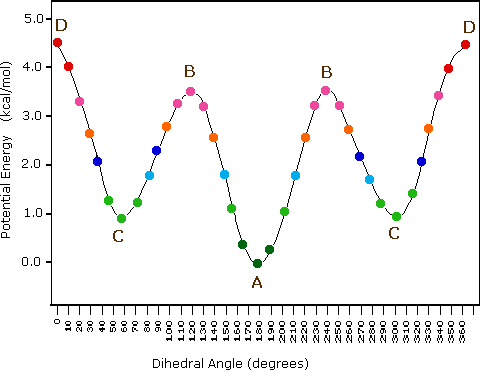
(i) Most conformational interconversions in simple molecules occur rapidly at room temperature. Consequently, isolation of pure conformers is usually not possible. (ii) Specific conformers require special nomenclature terms such as staggered, eclipsed, gauche and anti when they are designated. (iii) Specific conformers may also be designated by dihedral angles. In the butane conformers shown above, the dihedral angles formed by the two methyl groups about the central double bond are: A 180º, B 120º, C 60º & D 0º. (iv) Staggered conformations about carbon-carbon single bonds are more stable (have a lower potential energy) than the corresponding eclipsed conformations. The higher energy of eclipsed bonds is known as eclipsing strain. (v) In butane the gauche-conformer is less stable than the anti-conformer by about 0.9 kcal/mol. This is due to a crowding of the two methyl groups in the gauche structure, and is called steric strain or steric hindrance. (vi) Butane conformers B and C have non-identical mirror image structures in which the clockwise dihedral angles are 300º & 240º respectively. These pairs are energetically the same, and have not been distinguished in the potential energy diagram shown here.
For a more extensive discussion of rotamer analysis Click Here.
This page is the property of The Edvibe Team. Comments, questions and errors should be sent to contact@edvibe.co.ke. These pages are provided to the IOCD to assist in capacity building in chemical education. 05/05/2013